Yandex Go - Beri Zaryad
About the project
Beri Zaryad is a service for renting power banks inside the Yandex Go super app. Users pick up a charger from a nearby station, use it, and return it to any compatible station.
Key limitation: Beri Zaryad has two types of stations - blue and orange. The power bank can only be returned to a station of the same color.

Task
The current rental card allows you to borrow only one power bank at a time. You need to design a flow for renting two or more devices from one account and integrate it into the existing Yandex Go ecosystem.
Restrictions
The power bank charge cannot be shown in the app.
Tariffs are dynamic - they change depending on time.
Two types of stations: blue and orange. The power bank can only be returned to a station of its own color.
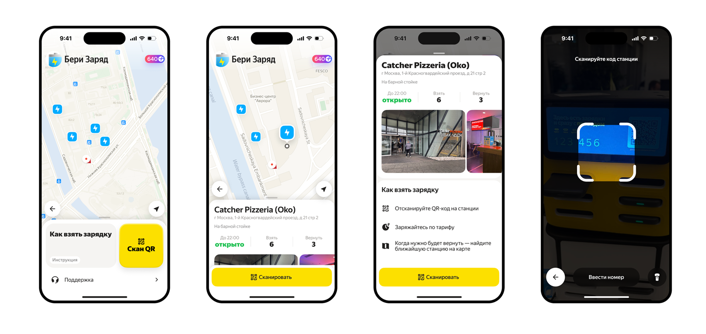
Work plan
Immersion in context. Understanding of business objectives, technical constraints and expected impact on metrics.
Discovery and segmentation. User research, review analysis, formation of primary hypotheses.
Benchmarks. Analysis of competitors in the sharing niche - both in Russia and in the Western market.
Customer development. Interviews with users to test hypotheses for relevance.
JTBD and hypotheses. Formulation of jobs by segments, consolidation of insights into a structure.
Prioritization. Scoring hypotheses using the value/complexity formula, building user flow.
Design. Low → high fidelity, flow design taking into account the ecosystem limitations of Yandex Go.
Recorded understanding of the task and key criteria for success.
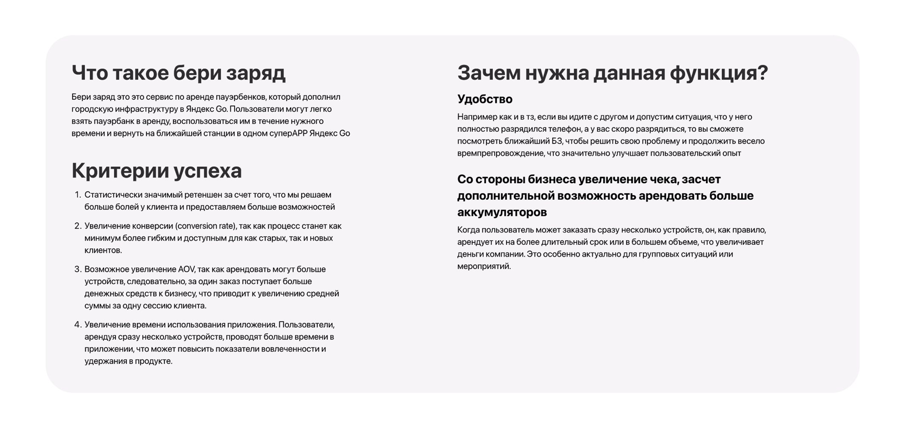
I formulated questions for the rental card - it was this that had to be reworked. Immersion in the context helped to conduct a UX audit in a substantive manner.
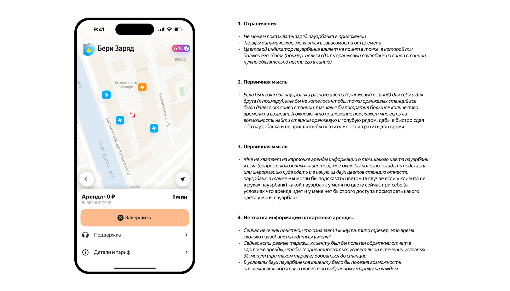
Analyzed sharing services in Russia and in the Western market: PowerApp, EnergoS, PowerNow and others. For each, I recorded the structure of the main page, the tariff card and the rental flow.
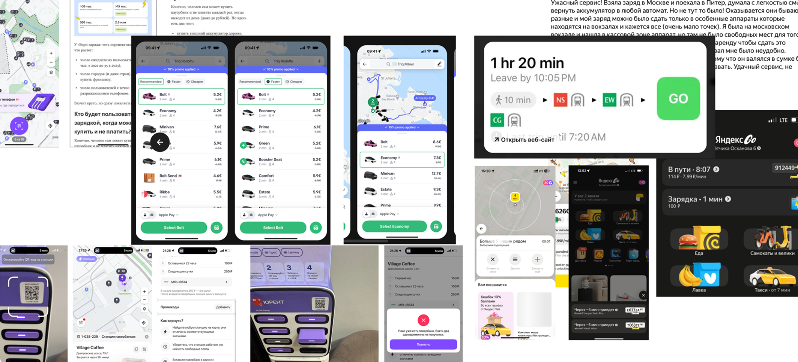
Interim conclusions
Highlight benefits
If you show a demand indicator (similar to Yandex Taxi - high / low), the user will be able to make a more informed decision about renting, and the service will be able to influence the distribution of the load.
Booking
The pre-booking function with a timeout will remove the fear of “I’ll come, but there’s no charger” - especially critical for a group scenario when several devices are needed.
Dynamic price indicator
Pricing transparency increases trust - the user can see why the price is what it is and can choose the optimal time.
Cross-selling within a super app
If the station is far away, offer to call a taxi directly from the card. This reduces the time to access the power bank and generates conversion to other products in the ecosystem.
Color coding
Visual separation of blue and orange stations on the map and in the rental card - so that the user immediately understands where to carry a specific power bank.
Based on the discovery, I formulated hypotheses. Some of them:
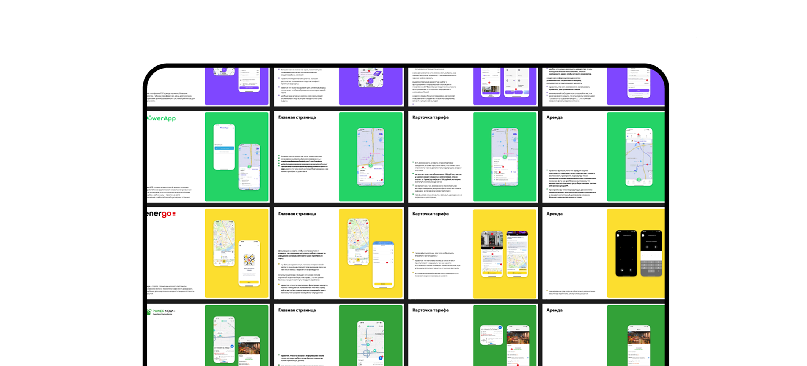
A few interim discovery conclusions:
Cross-selling
If you add a route to the nearest “Beri Zaryad” station in the app and offer to call a taxi to it if necessary, then the time for searching and accessing the power bank will be reduced by an average of 3 minutes, and the rental conversion will increase due to the convenience of moving to the point.
Restrictions
Each power bank has a unique identifier, so returns are processed one at a time—you can’t return them all at once with one button.
Transparency at the start
Before starting a rental, a good UX is to show the tariff. For example, Yandex Go, when selecting a “Beri Zaryad” station, immediately displays the current rental price at this point.
Color coding
Provide color coding for a specific power bank (blue/orange) to allow the client to navigate within the service.
Availability
Adding a route-to-station feature directly into the app to make it easier and faster for the user to find the station they need can reduce the likelihood of the user getting lost and improve the overall experience.
Based on the results of the analysis of reviews and interviews, I identified two key segments for multi-rental:
Tourists and travelers
They take power banks when traveling for themselves and their children. They value speed and don’t want to understand the interface. Group scenario: a family with several gadgets.
Schoolchildren and students
They rent several devices for a company - in a library, at a festival, in a cafe. Sensitive to price, transparency of tariffs is important.
For each segment, I mapped jobs using the Jobs as Progress / Jobs as Activities model to capture both pain points and expected outcomes.
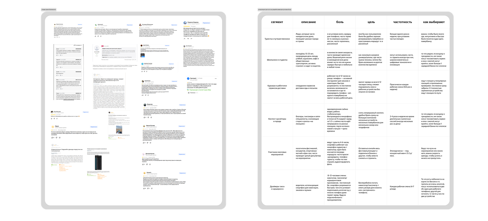
Some hypotheses that went into the first iteration:
Quick search for stations
If the app navigates the user to the nearest return stations - especially when you need to return power banks of different colors to different points - this reduces time and increases Session Length.
Added Value
If you send a push notification when the phone's charge level is low (similar to EnergyGo), the user receives an offer at the time of real need. Metrics: CR, RPR, Sticky Factor.
Highlighting time-based tariffs
If you highlight favorable rates depending on the time of day (similar to the demand indicator in Yandex Taxi), the user sees when it is more profitable to rent. Metrics: Activate Something Rate, Sessions Frequency, RPR.
Color coding
Color coding of stations on the map and in the card - the user can filter only the desired color and quickly find the return point. Metrics: AOV, LTV, MAU/DAU.
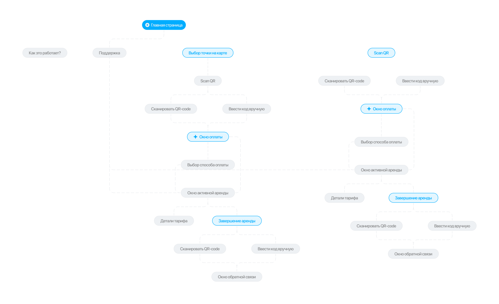
First design iteration. What was implemented?
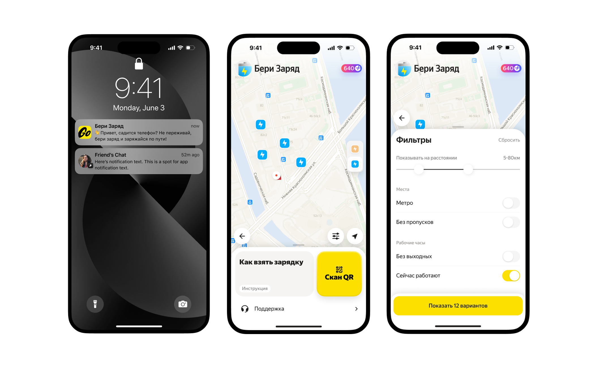
Well-developed copywriting. During the interview, 3 out of 4 respondents noted that the wording “take” and “give” was not obvious. Now you can immediately see on the station card: 8 power banks are available, 10 slots are free.
Reservation. Relieves the fear of “I’ll come, but there are no chargers” - the user reserves a power bank for 9 minutes before arriving at the station.
Cross-selling. If the station is far away, the app offers to call a taxi with a cost calculation. This grows revenue and conversion to other ecosystem products.
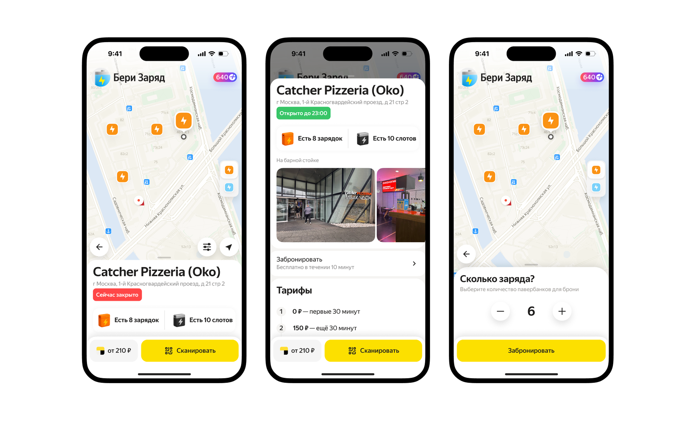
Marketing. The booking countdown creates a gentle sense of urgency, which is hypothesized to motivate the user to get to the station faster.
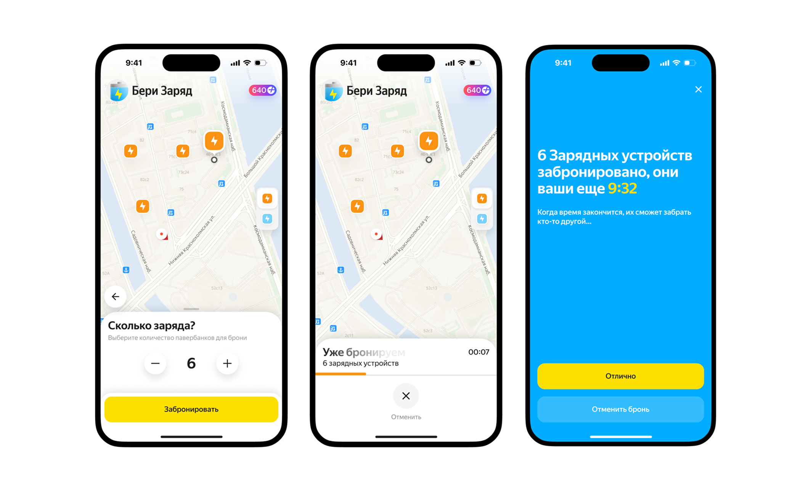
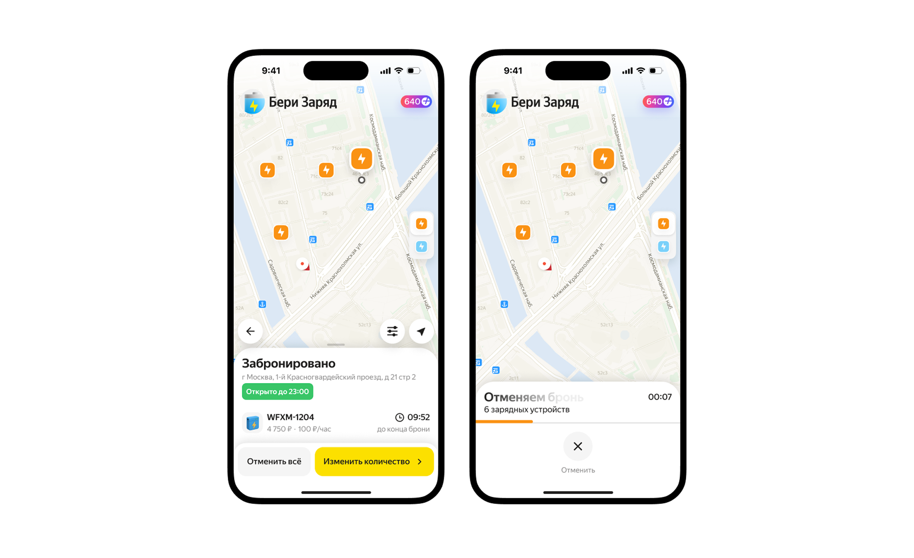
The active rental card is designed according to Jobs as Activities / Jobs as Progress. The emphasis is on the rental time (the cost is secondary - it is already loyal) and the color of the power bank, so that the user immediately understands which station to take it to. The device code is needed to contact support. On the map, you can filter stations by color—only orange or only blue—to remove the cognitive load.

What to do next?
Usability testing. There is a hypothesis that users may confuse the tariff schedule and the accumulated cost for a specific power bank - this needs to be checked before launch.
Corner cases. Work out technical scenarios: what if the station does not have enough return slots, what if the reservation expired on the way, what if the power bank is low.
Iterative rollout. Run prioritized hypotheses to measure the impact of each change on metrics in isolation.
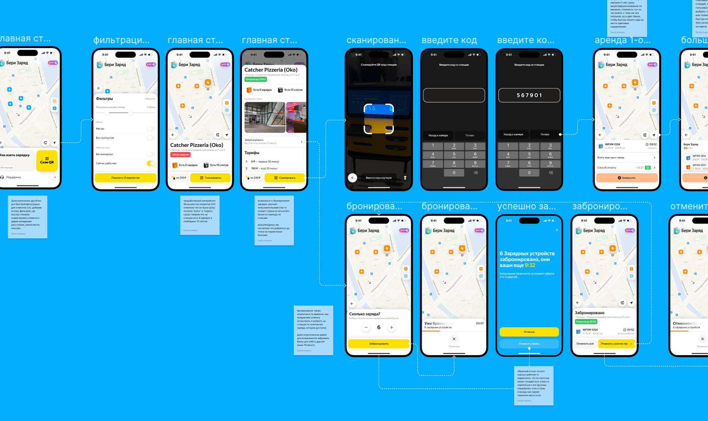